PERSIST(ICML 2026,Mila × UdeM × McGill)提出用持久 3D 状态(persistent 3D state)替代「像素历史 / 关键帧检索」作为交互式世界模型的世界表示。核心论点:视频世界模型(Oasis 类滑窗、WorldMem 类关键帧检索)把世界状态隐式存在 attention 里的帧序列中,一旦观测脱离画面或窗口滑走,状态即丢失;而 PERSIST 把状态显式存在一个以 agent 为中心的体素 world-frame latent $w$ 中——agent 走多远,世界记住多远。
核心贡献四个:
现有交互式世界模型(以 Oasis、WorldMem 为代表)把「世界」存在像素历史中,要么是滑窗内的最近 K 帧,要么是检索出的关键帧集合。论文指出三个结构性问题:
本库此前调研的 WorldMem(关键帧检索)与 CovRAG(覆盖最大化检索)属于「更好的检索」路线:承认状态在像素里,改进「取哪几帧」。PERSIST 属于「换载体」路线:状态根本不在像素里。两条路线的对比哲学与 Lyra 2.0 的「显式几何只做信息路由」同源——但 Lyra 路由的是视频 token,PERSIST 路由的是整个世界状态本身。
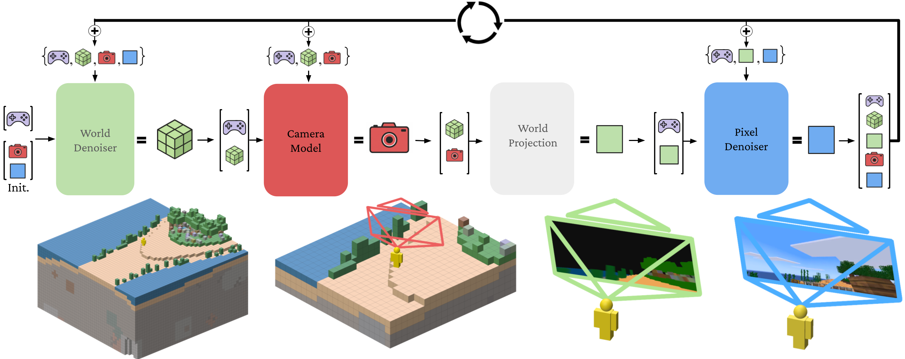
论文把交互式世界模型形式化为五元组 $E=\langle S, O, A, \Omega, p\rangle$:状态空间 S、观测空间 O、动作空间 A、初始状态分布 Ω、转移核 $p(s_{t+1}\mid s_t, a_t)$。智能体只观测 $o_t$,需从观测-动作历史推断状态。标准「世界模型」做法是学一个隐状态 $h_t$ 聚合历史;PERSIST 的关键改变是把隐状态结构化为 $\tilde{s}_t=\langle w_t, c_t\rangle$——环境部分 w(体素 latent)与相机部分 c(视角)显式解耦。
| 符号 | 含义 | 维度 / 说明 |
|---|---|---|
| $o_t$ | 像素观测 | 360×640 RGB |
| $w_t$ | world-frame latent(以 agent 为中心) | 48³ 体素 → 3D-VAE 编码 → 12³×48 |
| $c_t$ | 相机状态 | 10 维 ⟨pos(3), rot(6d), fov(1)⟩ |
| $a_t$ | 动作(multi-hot) | 23 维(移动/跳/挖/放/槽位/鼠标偏移) |
| $z_t$ | 像素 latent | 36×64×16(10px patch,2D-VAE) |
| $W_\theta$ | world-frame 模型 | rectified flow DiT,预测 $w_{t+1}$ |
| $C_\theta$ | 相机模型 | 1D causal transformer + RoPE,预测 $c_{t+1}$ |
| $P_\theta$ | world-to-pixel 渲染 | learned deferred shader,从 $\tilde{w}_{2D}$ 生成 $o_{t+1}$ |
| $R(c,w)$ | 投影算子 | $(\tilde{w}_{2D}, d)$(体素特征栈 + 深度) |
| $\tilde{w}_{2D}$ | 投影后的体素特征栈 | 逐像素深度有序,通道维拼接体素特征 |
| $\tau$ | flow 时间步 | rectified flow 的噪声插值参数 |
| $V_\theta$ | 速度场(denoiser) | DiT 主干,学 $v(x^\tau,\tau)$ |
World-frame 模型采用 rectified flow / conditional flow matching 目标(Eq. 1):
其中 $x^1\sim\mathcal{N}(0,I)$ 为噪声,$x^\tau=\tau x^0+(1-\tau)x^1$ 为线性插值。推理时按 Euler 步(Eq. 2)$x^{\tau+\Delta}\leftarrow x^\tau+\Delta\,V_\theta(x^\tau,\tau)$ 迭代去噪,默认 20 步。世界模型演化即 Eq. 4:$\hat{w}_{t+1}=\text{denoise}_{W_\theta}(w_t,a_t)$。
体素窗口随 agent 移动,agent 永远在中心。好处:支持无限漫步,状态容量固定(48³);代价:窗口外的世界不维护——但已比像素滑窗大得多。
48³ 体素经 3D-VAE(ResNet3d 主干,cross-entropy + KL 1e-6)压到 12³×48 latent,4³ 体素一个 patch。W_θ 在 latent 空间做 flow,计算量与像素空间解耦。
w 只装「世界」,相机状态 c 独立(⟨pos, rot, fov⟩ 10 维)。视角变化不污染环境状态,回头/俯仰时 w 不动、只动 c——这是「持久」的第二重含义:视角无关性。
ViT 主干,MSE + KL 1e-6。360×640 像素 → 36×64×16 latent(10px patch)。服务于 P_θ 的像素重建与 DFoT 式 pixel-level 训练。
ResNet3d 主干,重建用 cross-entropy(体素类别)+ KL 1e-6。48³ 体素 → 12³×48。服务于 W_θ 的 world-frame 训练。
双塔的意义:两个域各自有最合适的压缩失真权衡(像素 MSE 保连续外观,体素 CE 保离散类别),不必强行用一套 VAE 兼顾。
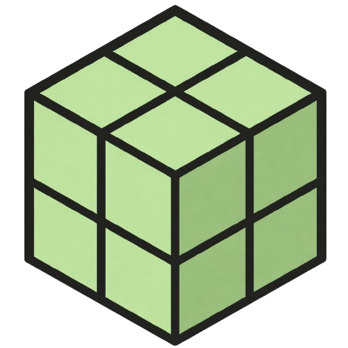
整套循环涉及四种输入模态,论文 Figure 1 中的四个子图分别给出直观示例:
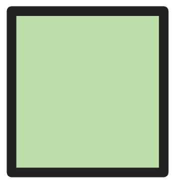
体素帧 w:48³ world-frame(GT 由引擎提供)
相机状态 c:10 维 ⟨pos, rot, fov⟩
动作 a:23 维 multi-hot(移动/挖掘/放置/槽位/鼠标)
像素观测 o:360×640 RGB 渲染
| 组件 | 结构 | 输入 → 输出 | 训练目标 |
|---|---|---|---|
| W_θ world-frame 模型 | rectified flow DiT(patch 2,12³ 输入,ape+raymap) | $w_t, a_t, c_t \to w_{t+1}$ | CFM(Eq. 1) |
| C_θ 相机模型 | 1D causal transformer + RoPE | $c_{1:t}, a_t, z_{1:t} \to c_{t+1}$ | 残差回归(Δpitch/Δyaw/Δfov) |
| P_θ world-to-pixel | learned deferred shader(DiT) | $\tilde{w}_{2D}, c_{t+1} \to o_{t+1}$ | VAE latent 重建 + flow |
DiT 在 12³ latent 上做 rectified flow。条件注入方式:动作 $a_t$(23 维 multi-hot)与相机 $c_t$ 经 MLP 后作为 cross-attention 条件;latent 位置用 3D APE(voxel_use_ape=True);投影特征栈输入时开启 pixel_use_raymap(每像素射线方向可学嵌入)。去噪默认 20 步,σ_min=1e-5。
pipelines/persist_S_pipeline/pipeline.json):voxel_sampler 配置 {"noise_cond":0.1,"sigma_min":1e-5,"steps":20,"rescale_t_inference":3.0,"min_noise_level_inference":0.02} 与论文 Table 9 完全吻合——η=3(rescale_t_inference)、τ_ctx=0.02(min_noise_level_inference)、10% flat 噪声增强(noise_cond 0.1)逐项对上。pixel_sampler 同构,唯 min_noise_level_inference=0.1。10 维相机状态 ⟨pos(3), rot(6d), fov(1)⟩ 经重参数化后,只预测残差 ⟨Δpitch, Δyaw, Δfov⟩(不预测位置与 roll)。1D causal transformer 沿时间轴 RoPE,吃相机历史 + 动作 + 像素 latent 历史。源码 models/camera_transformer.py 的 predict_next_camera 中 GAIN_PITCH=3.6、GAIN_YAW=6.4,delta 输出为分类式(乘增益),pitch clamp 到 [1e-8, 180-1e-8] 防极点退化。
learned deferred shader:先由投影算子 R 得到逐像素深度有序的体素特征栈 $\tilde{w}_{2D}$(每个像素位置的可见体素特征序列),P_θ 在此 2D 特征栈上用 DiT 直接生成像素 latent 再解码。相比体素→mesh→神经渲染的物理管线,learned shader 允许模型自学「如何从体素特征画像素」,避免显式纹理/材质建模。
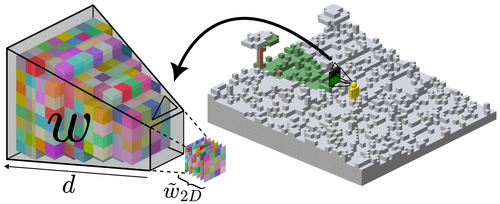
W_θ 在体素 latent 空间演化,P_θ 在像素空间渲染——两者之间需要一个可微、视角条件化、深度有序的桥接。R(c,w) 把 world-frame 投影到相机 c 的视角:
输出 $\tilde{w}_{2D}$ 是逐像素的体素特征栈(沿视线方向按深度排序),d 是对应深度。深度有序很关键:遮挡关系显式编码在特征栈的排序里,渲染器不需要隐式学遮挡。
体素块转三角网格后用可微光栅化渲染,depth-peeling 逐层剥离得到多图层特征栈(max_layers=32)。源码 utils/voxel_rasterizer.py 的 VoxelMeshRasterizer(dim=16, width=256, height=256, max_layers=32),rasterize_voxel_peeling 调 nvdiffrast 的 dr.DepthPeeler;screen_depth_to_view_space_depth 实现视图空间深度换算 $z_{view}=-p_{23}/(z_{ndc}+p_{22})$。
光栅化可微 → 梯度可以从像素损失回传到体素 latent,端到端训练 P_θ 时 world-frame 表征被反向塑形。
R 是纯函数、无参数、不依赖历史帧——同一 w 在任意视角 c 下可重复投影,「记忆」由 w 单点持有,与视角解耦。
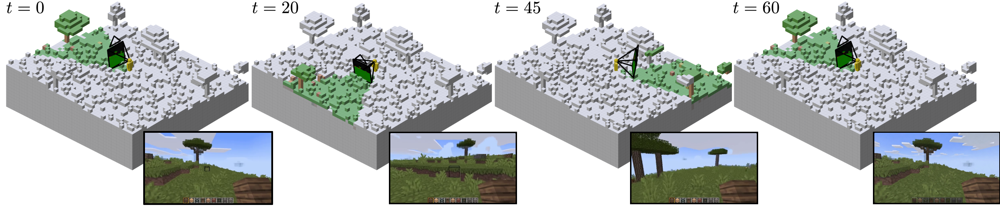
推理时 W_θ 吃自己生成的 $w_t$(带误差),训练时吃真值 $w_t$(无误差)——经典暴露偏置(exposure bias),误差逐帧复合。PERSIST 用两层机制缓解:
cond = (1-0.1)·latent + 0.1·noise(源码 train_scripts/train_diffuser_voxel.py 中 cond["pixel_latents"] = (1-noise_cond)*batch["pixel"] + noise_cond*noise_pix 的 voxel 侧对应实现)。这比 DFoT 更粗但极廉价,进一步抹平自回归分布偏移。trainers/flow_euler.py 中 DiffusionForcingArgs 默认 noise_cond=0.015 是 DFoT 内部的噪声表参数,与推理增强的 0.1 是两回事——读源码时不要混淆。W_θ 与 P_θ 推理时维护 causal KV cache(reset_and_warmstart_kv_caches),单帧循环不重算历史注意力;DFoT 噪声只作用于当前帧的条件拼接,不影响 cache 的复用。这是 PERSIST-S 能做到 2/4-step 886ms/帧的工程前提之一。
读图要点:① 整个循环里没有检索、没有历史帧缓存——状态全在 w 与 KV cache 里;② R 是无参数纯函数,不参与训练目标,只做视角投影;③ W_θ 与 P_θ 各自 flow 去噪,两级扩散串联但梯度不互通(训练独立)。
数据来自 Luanti(开源体素游戏引擎,原 Minetest)上通过 Craftium 采集:记录玩家 trajectory 的像素观测(360×640)、体素 world-frame(GT,用于 W_θ 监督)、相机状态、23 维动作。GT 3D 监督是 PERSIST 的特权也是枷锁——体素世界由引擎直接给出,W_θ 学的是真实状态转移;但这也把方法绑死在可提供 GT 体素的模拟器上(见 §16)。
FVD 在 200/400/600 帧三个时长上计算(256 帧参考分布),主表报告 FVD;人评 4 维度(视觉保真 VF / 3D 一致性 / 时序一致性 / Overall,1-5 分);推理速度在单张 A100 上测。消融与基线在同协议下对比。
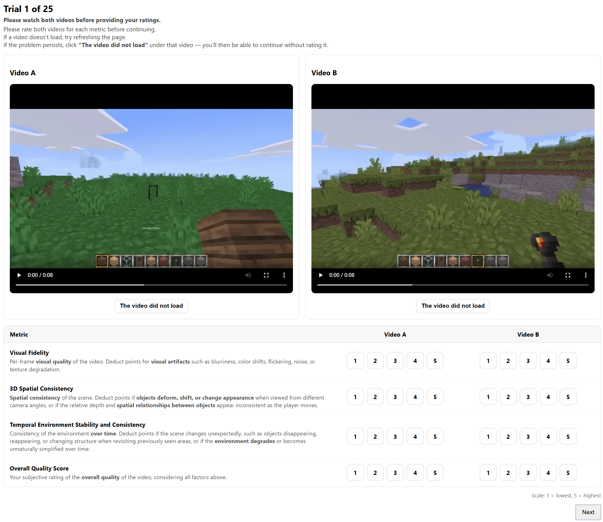
| 方法 | 世界表示 | 记忆机制 | 备注 |
|---|---|---|---|
| Oasis(Decart, 2024) | 像素隐状态 | 滑窗(最近帧) | 交互式像素世界模型开山作,无 3D 载体 |
| WorldMem(Xiao, 2025) | 像素隐状态 | 关键帧检索(空间+时间+周期打分) | 检索增强路线代表;长视频评测常超时未报全 |
两个基线恰好覆盖「什么都不记(滑窗)」与「聪明地记(检索)」两端,PERSIST 作为「3D 状态持久化」第三条路线参战。
| 变体 | 改动 | 目的 |
|---|---|---|
| PERSIST-S | 3D-S denoiser(8× 更少空间 token) | 效率档:验证架构在低算力下的保持度 |
| No-3D-Upscale | 去掉 3D 上采样 | 定位 3D 上采样对渲染质量的贡献 |
| Camera-GT | 相机用 GT 而非 C_θ 预测 | 分离「环境预测误差」与「相机预测误差」 |
| PERSIST + w0 | 推理时显式给定/编辑 w0 | 展示结构化初始化与编辑能力 |
| 方法 | FVD@200 | FVD@400 | FVD@600 | 600 帧相对 200 帧恶化 |
|---|---|---|---|---|
| Oasis | 409 | 687 | 875 | +114% |
| WorldMem | 358 | − | − | 未报全 |
| No-3D-Upscale | 216 | 231 | 247 | +14% |
| Camera-GT | 161 | 152 | 152 | −6%(饱和) |
| PERSIST-S | 159 | 170 | 179 | +13% |
| PERSIST | 129 | 141 | 148 | +15% |
| PERSIST + w0 | 80 | 93 | 104 | +30% |
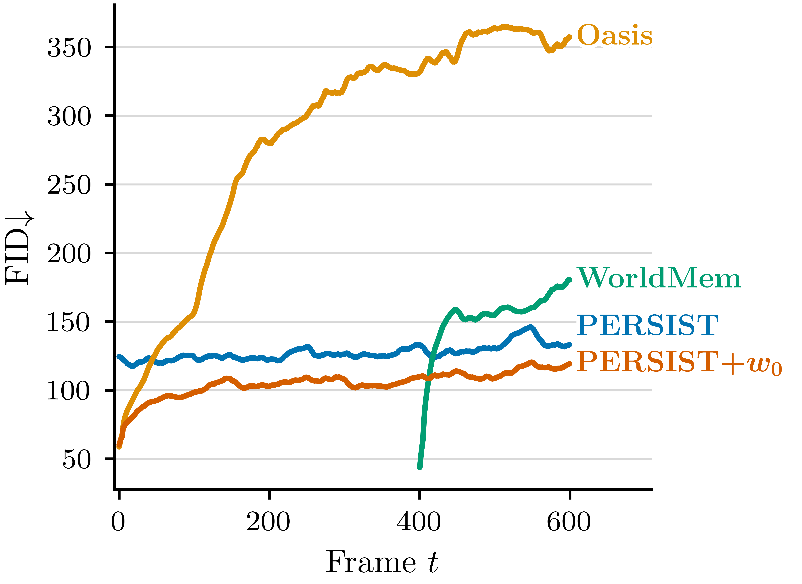
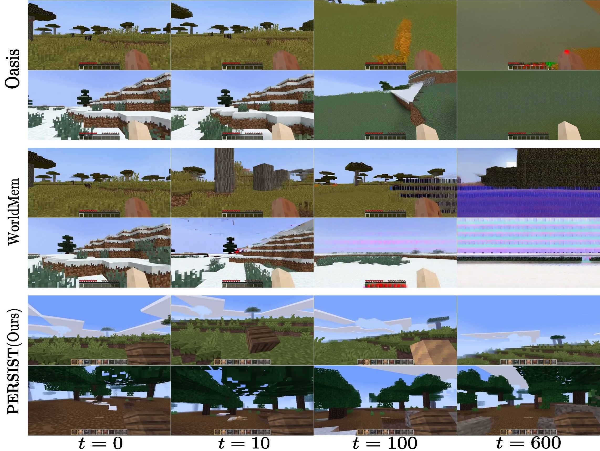
| 方法 | 视觉保真 VF | 3D 一致性 | 时序一致性 | Overall |
|---|---|---|---|---|
| Oasis | 2.1 | 1.9 | 1.8 | 1.9 |
| WorldMem | 1.7 | 1.7 | 1.5 | 1.5 |
| PERSIST-S | 2.8 | 2.7 | 2.5 | 2.6 |
| PERSIST | 2.8 | 2.5 | 2.5 | 2.6 |
| PERSIST + w0 | 3.2 | 2.8 | 2.8 | 3.0 |
人评与 FVD 排序一致;PERSIST 系列在 3D 一致性维度对两个基线的领先幅度最大(S 档 +0.8 vs Oasis)——3D 载体直接兑现为感知层面的几何一致性。值得注意的是 WorldMem 人评反而低于 Oasis,提示检索注入的帧可能引入风格跳变等感知瑕疵(FVD 之外的维度)。
附录给出逐维度头对头分布(h2h 四联):PERSIST 对 Oasis 的优势在 3D 一致性与时序一致性两个维度最显著,视觉保真度上差距较小——与「3D 载体 → 3D 一致性」的因果叙事吻合。
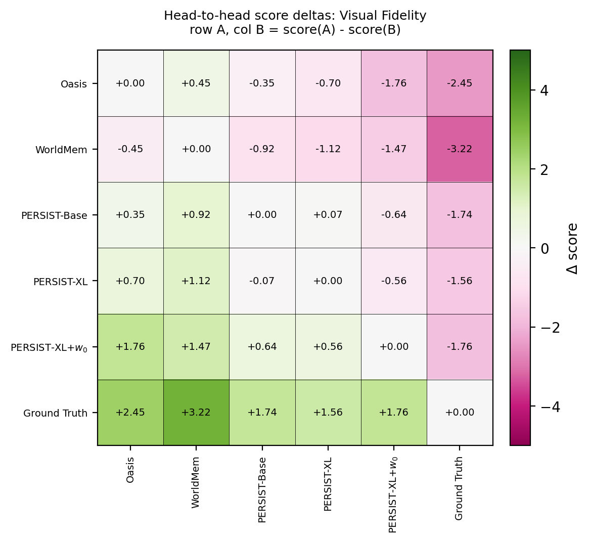
(a) 视觉保真度分布
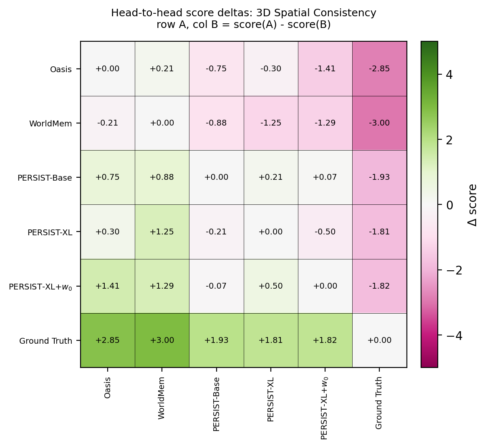
(b) 3D 空间一致性分布
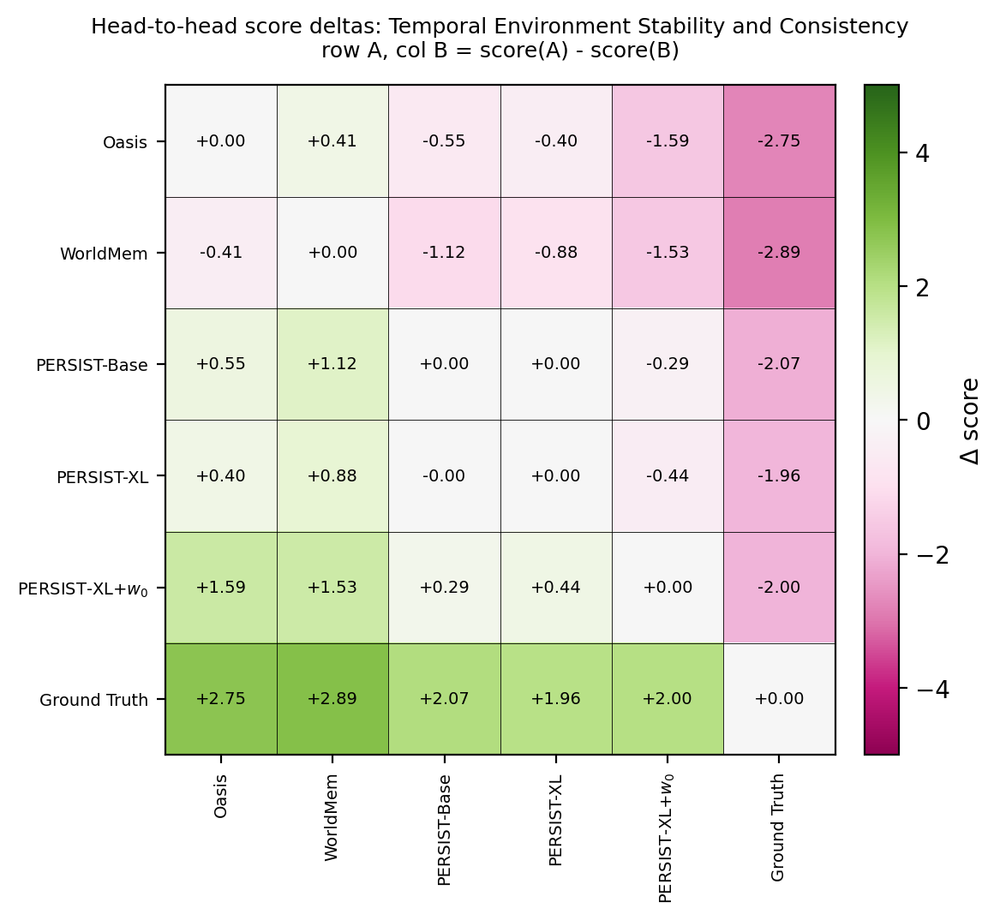
(c) 时序一致性分布
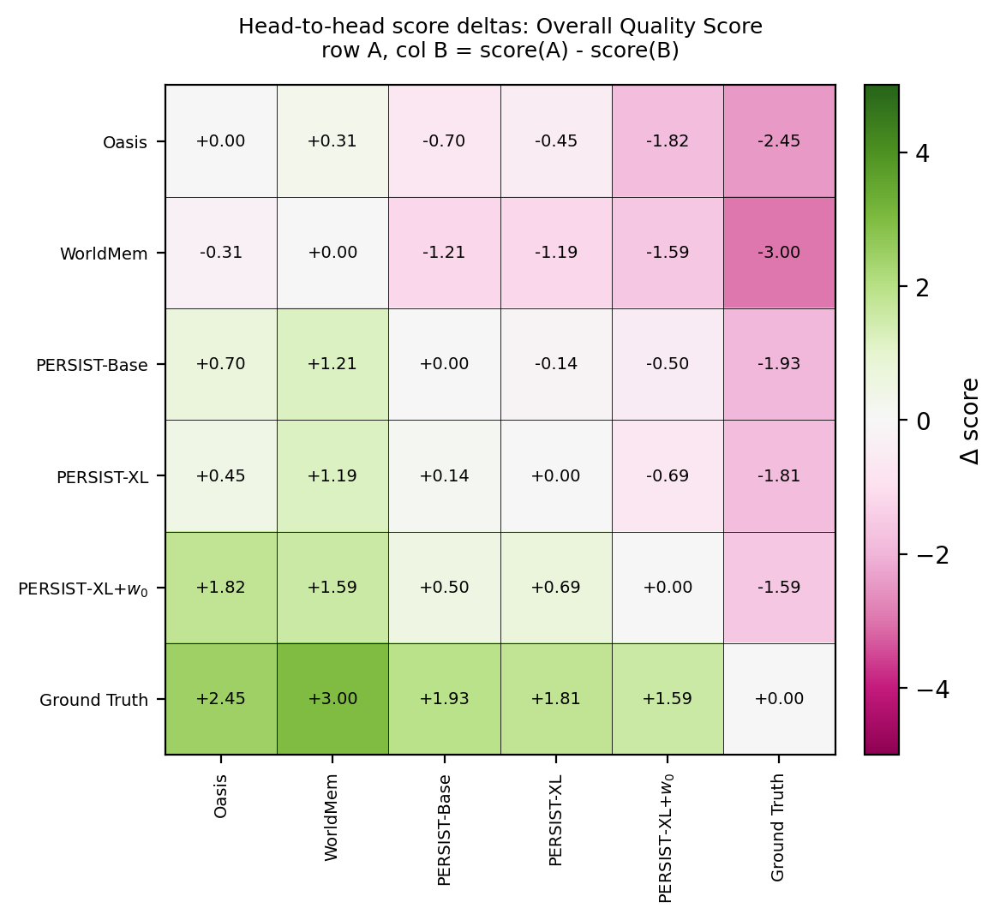
(d) 总体质量分布
| 配置 | ms/帧 | FPS | FVD@200/400/600 |
|---|---|---|---|
| WorldMem | 6387.1 | 0.16 | 358/−/− |
| Oasis | 3007.4 | 0.33 | 409/687/875 |
| PERSIST-S | 2672.4 | 0.37 | 159/170/179 |
| PERSIST-S 4-step | ~1330 | ~0.75 | ~略升 |
| PERSIST-S 2-step | 886 | 1.13 | 207/230/244 |
去噪步数 20→2(或 4)配合 KV cache 复用,单帧 886ms、3× 加速,FVD 仅从 159 升至 207(+30%,仍优于全部基线)——步数-FVD 曲线平缓,rectified flow 的直线路径性质使少步采样可行。但距离实时(≥8 FPS)仍有一个数量级差距。
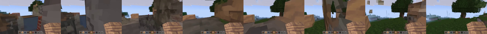
从单张图 o_0 出发,W_θ 的 flow 采样可生成多个不同的 w_0(3D 世界的「幻想补全」),再进入交互循环。这是像素自回归模型做不到的:像素模型从单图只能走一条轨迹,而 PERSIST 把「世界的不确定性」从时序维度搬到了 3D 结构维度——一次采样定型一个世界,之后该世界内交互是确定的。
初始化有两种模式(论文 Figure 3):仅单 RGB 帧(,第一行,模型自行采样补全 w_0),或 RGB + 世界帧联合初始化( + ,第二行,GT/显式给定 w_0)。
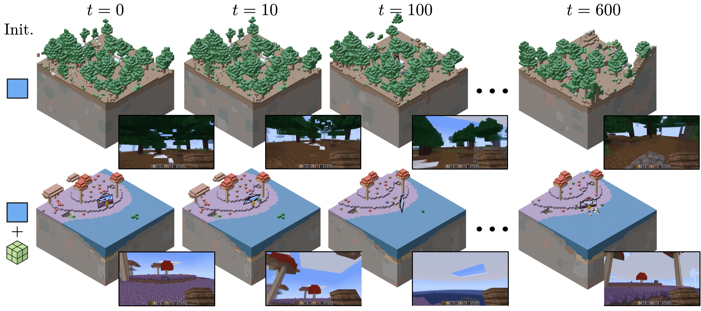
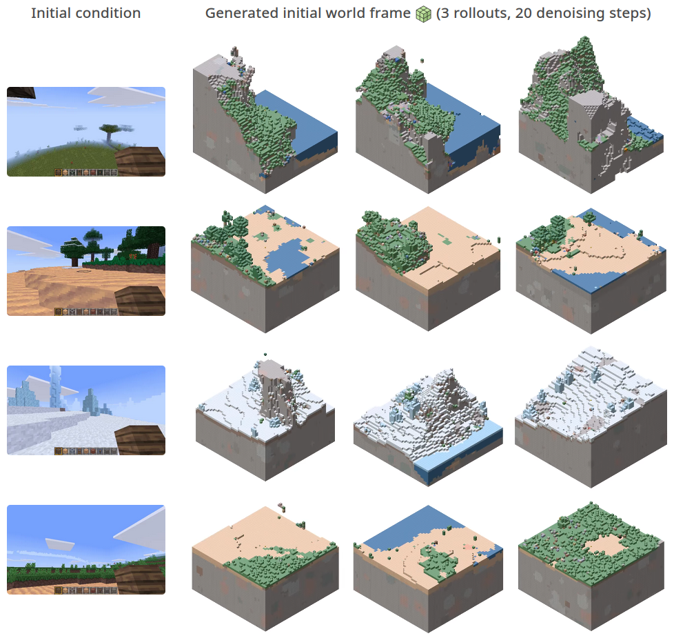
w 是结构化张量(体素 latent),可以在任意时刻显式改写(增删建筑、改地形),后续帧立即生效且持续保持。编辑接口天然存在,无需为编辑设计专门机制——这是「状态在显式载体里」的直接红利。对照:像素模型的编辑需要专门训练 inversion/editing 模块。
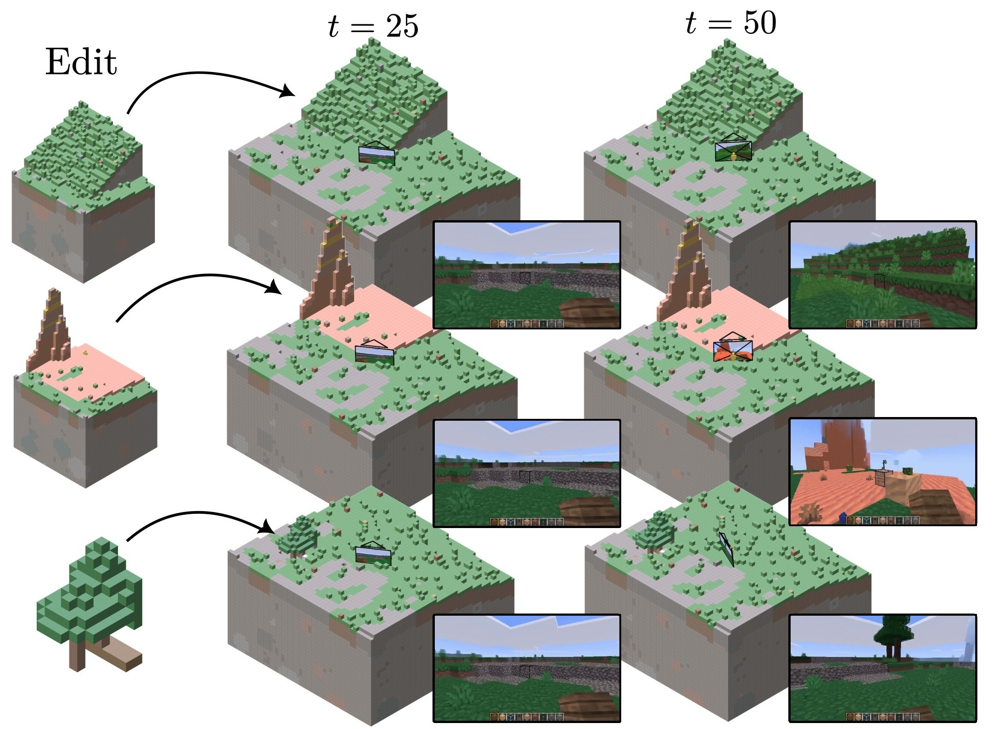
最有说服力的能力:agent 在 A 处撞倒树/注水洞穴,走远再回来,变化仍在——因为演化发生在 3D 状态里而非观测里。论文展示了洞穴注水、树被撞倒等案例;这类「屏外因果」是滑窗与检索模型原理上无法保证的(除非恰好检索到相关帧)。
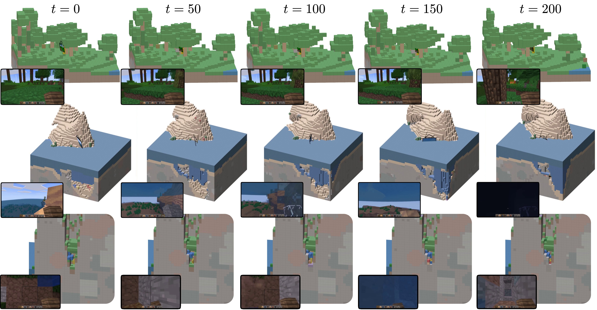
| 维度 | Oasis(2024) | WorldMem(2025) | CovRAG(2026) | PERSIST(2026) |
|---|---|---|---|---|
| 世界表示 | 像素隐状态 | 像素隐状态 + 检索库 | 像素隐状态 + 覆盖检索 | 显式 3D 体素 latent |
| 记忆机制 | 滑窗(被动) | 关键帧检索(打分) | 贪婪集合覆盖选帧 | 状态持久化(无需检索) |
| 状态空间复杂度 | O(K) 窗口帧 | O(库大小) | O(库大小) | O(1) 恒定 48³ |
| 屏外世界维护 | ✗ | 仅被检索到的帧 | 仅被检索到的帧 | ✓ 持续演化 |
| 3D 一致性来源 | 隐式 attention | 隐式 + 检索锚点 | 显式几何做路由(VGGT warp) | 显式 3D 状态本身 |
| 编辑接口 | ✗(需 inversion) | ✗ | ✗ | ✓ 直接改 w |
| 单图→多世界 | ✗(单轨迹) | ✗ | ✗ | ✓ w_0 多采样 |
| GT 3D 监督需求 | 不需要 | 不需要 | 深度估计器(VGGT) | 需要引擎 GT 体素 |
| 600 帧 FVD | 875 | − | − | 148(w0: 104) |
| 推理速度 | 3007 ms/帧 | 6387 ms/帧 | − | 2672(2-step: 886)ms/帧 |
四篇构成一条清晰的演进线:Oasis(什么也不记)→ WorldMem(记关键帧)→ CovRAG(聪明地选帧)→ PERSIST(把状态搬进 3D,不再需要记)。前三篇共享「状态在像素里」前提,在检索轴上内卷;PERSIST 换掉了前提本身。CovRAG 用 VGGT 深度做检索路由,已经引入显式几何,但几何只服务于「选哪帧」;PERSIST 让几何成为状态本身——与 Lyra 2.0「显式几何做信息路由」vs「几何即状态」的分野完全同构。
utils/camera_util.py 内置 worldmem_cam_to_minetest_cam 与 WorldMem 相机坐标对齐——两团队评测协议互通。「状态持久化 vs 检索」的取舍对多目持久重建有直接启发:head_gs/body_gs/scene_gs 的拆分本质上也是「把状态放进显式 3D 载体」,PERSIST 验证了 latent 体素 + 可微光栅化投影的组合可以端到端维护——多-session 人体重建的「跨 session 状态持久」可借鉴此架构(W 为持久人体/场景 gaussians,R 为可微渲染)。
PERSIST 的 FVD 三时长协议(200/400/600)+ 人评四维是可复用的评测骨架;R2M-Bench 的 re-visit 协议补上「屏外持久性」维度,两者合用可构成交互式世界模型的完整评测矩阵。
论文附录展示了一段 2000 步(83 秒)episode 的伪影演化:3D 表示发生局部漂移,单个方块被「复制/涂抹」到邻近区域;但模型随后自我恢复,漂移区域被重新去噪收敛。这说明伪影不是单向累积的雪崩,而是「漂移—恢复」的动态平衡——DFoT 噪声下界与 KV cache 的组合给了模型持续纠错的余地。下面按时间顺序截取 8 帧(s00 → s83,秒):
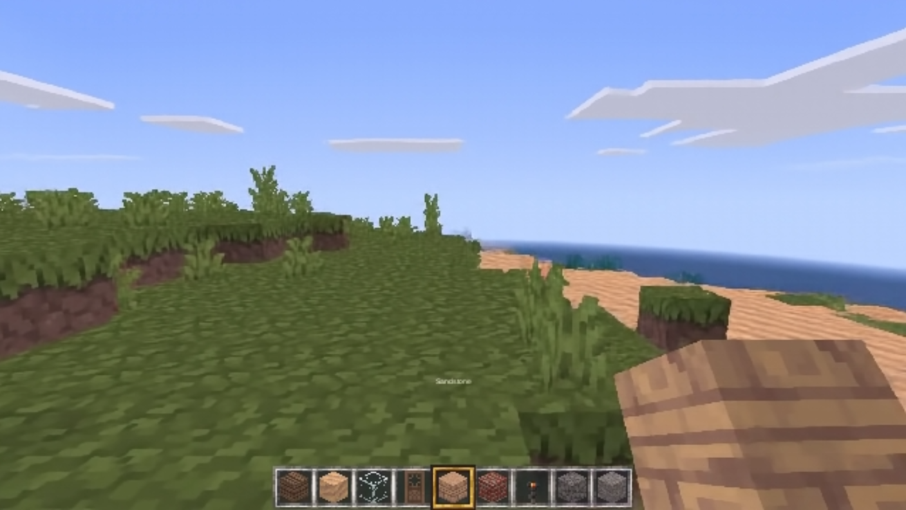
s00(t=0s):episode 起点,结构完好
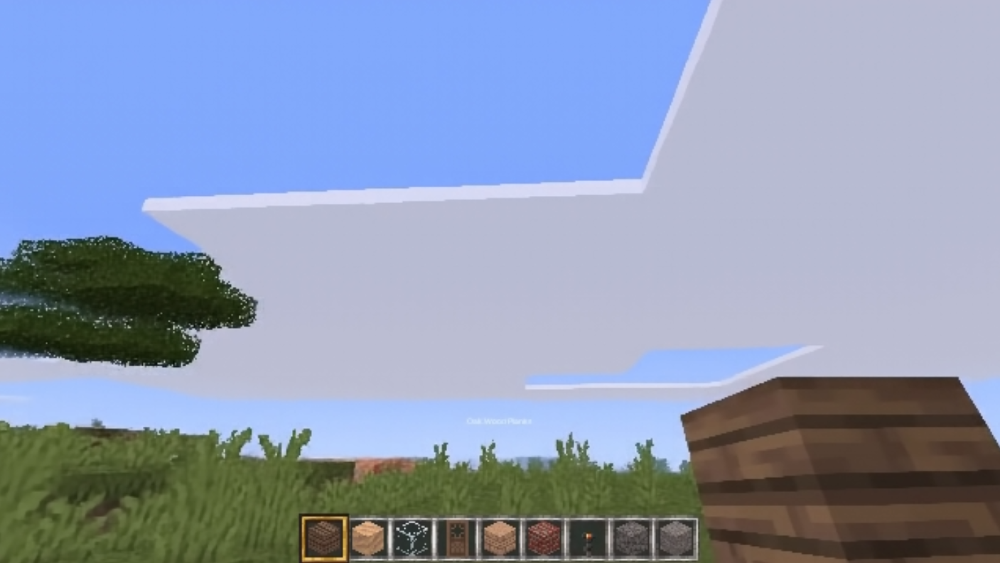
s28(t≈11.7s):局部方块开始漂移
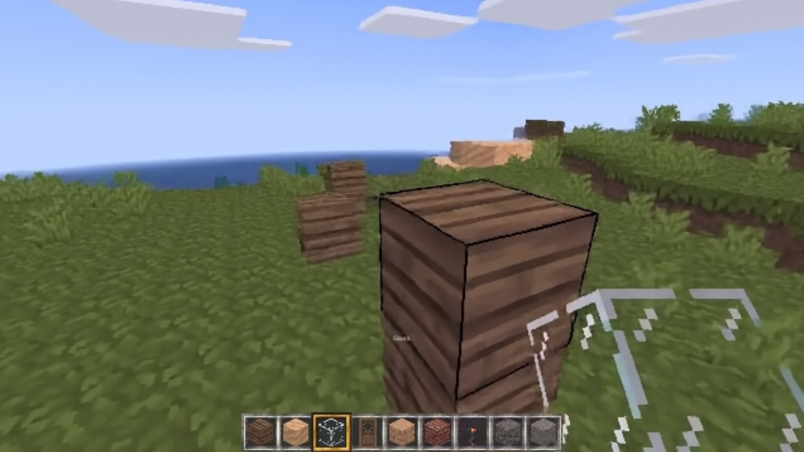
s37(t≈15.4s):漂移区域扩大,出现涂抹
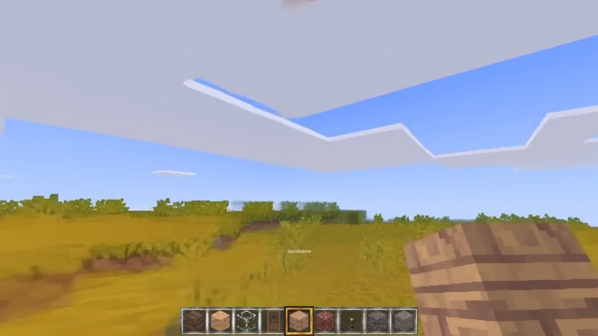
s54(t≈22.5s):伪影明显的低谷期
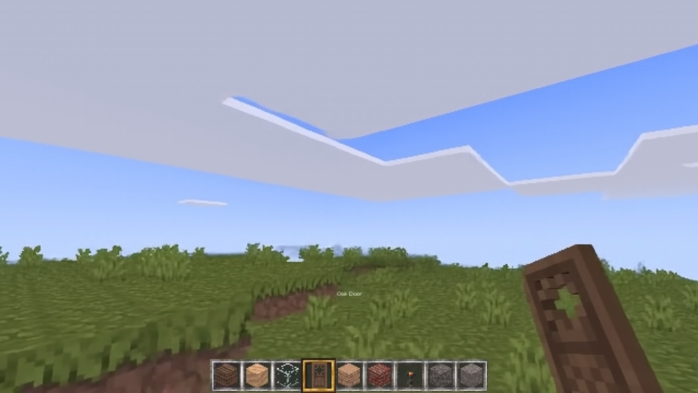
s55:随后开始自恢复
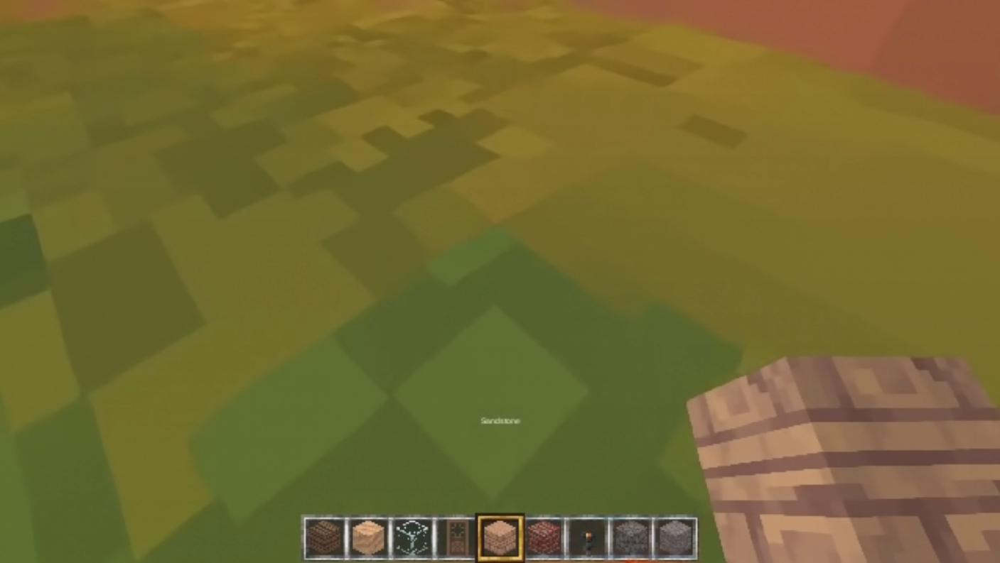
s69(t≈28.8s):漂移区域被重新收敛
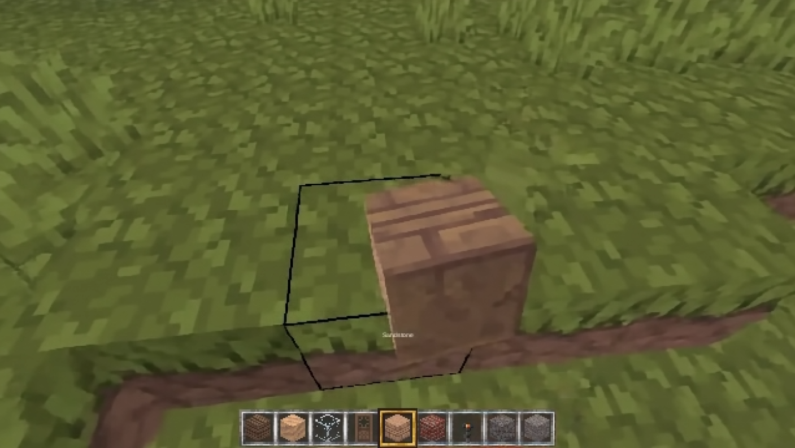
s70:恢复持续,结构回归
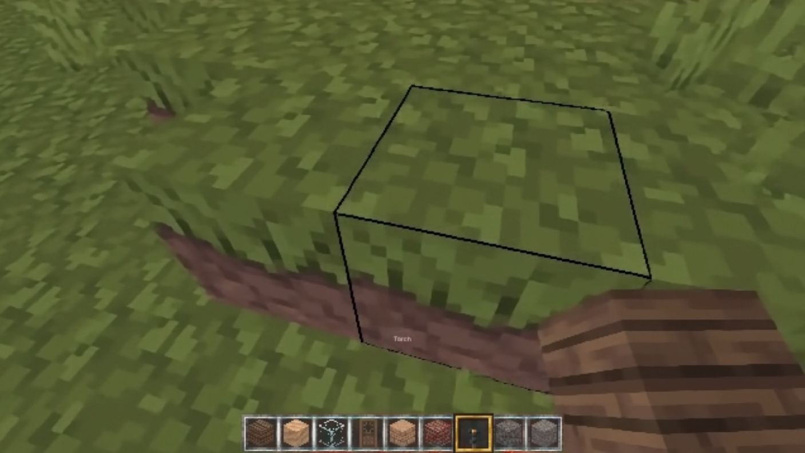
s83(t≈34.6s):episode 末尾,伪影已消散
francelico/PERSIST(PyTorch,含 pipeline.json 发布配置、KV cache 加速、PERSIST-S 变体;本笔记所有源码引用均出自该仓库)。